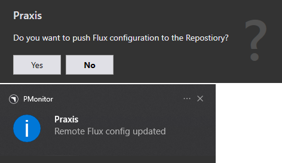

Malzeme eşleme
Alternatif olarak, malzemeyi doğrudan TecZone’den eşleyebilirsiniz. Takma adlar, fabrikanızda yaygın olarak kullanılan malzeme adlarını kullanmak için kullanılabilir.
TecZone’den Bend Malzemesi Ekleme
-
TecZone’i açın. Database ve Materials seçeneklerine tıklayın.
-
Malzeme ve parametrelerini ekleyin. TecZone’i kapatın.
-
Sistem tepsisindeki Pmonitor üzerine sağ tıklayın, Flux konfigürasyonunu depoya yüklemek istiyor musunuz? seçeneğine tıklayın.
-
TecZone yapılandırmasını Repository’ye göndermeyi onaylamak için Evet seçeneğine tıklayın.

Malzeme Adını Eşleme
fabrika → saclar → Eşleştir → Malzemeler, Malzemeleri Düzenle sayfası görüntülenir. Malzemeler ve Hammaddeler, Bend Material’e (1.0036, 1.4301, AlMg3,…) karşı eşlemek ve/veya Takma adlar belirtmek için solda listelenir.
-
Copper Material üzerine tıklayın ve Cu seçin. Malzeme, tüm Copper Raw Material’e (Copper-15, Copper-20, Copper-25, Copper-30, Copper-40) atanır.
-
Copper-40 Raw Material üzerine tıklayın ve CuZn seçin.
Bend Material eşlemesi, Material veya Raw Material’e karşı yapılabilir.